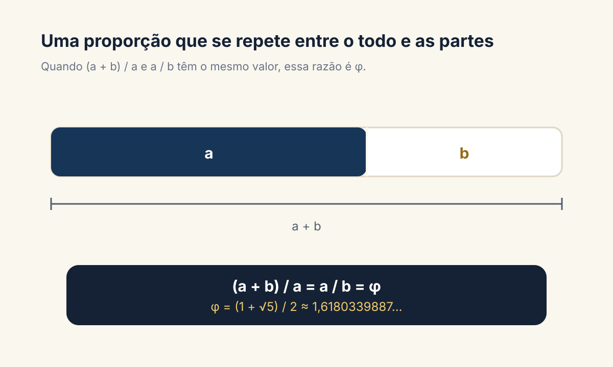
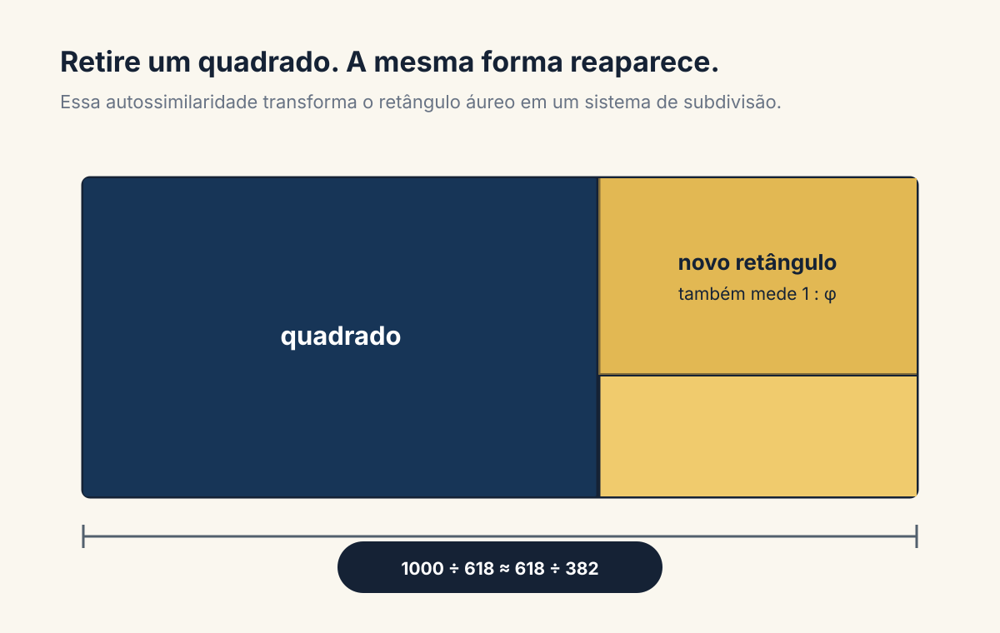
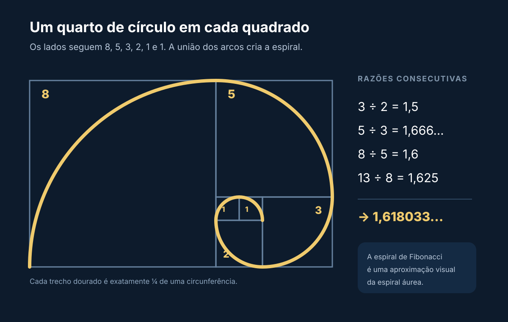
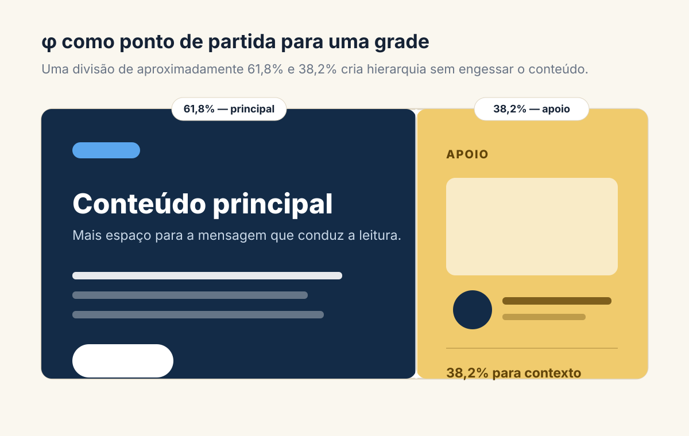

Algumas composições parecem equilibradas antes mesmo de entendermos por quê. A relação entre um título e uma imagem, o espaço ocupado por duas colunas ou a escala entre elementos pode criar ritmo, conduzir o olhar e dar unidade ao projeto. A proporção áurea é uma das ferramentas usadas para organizar essas relações.
Ela aparece na matemática, se conecta à sequência de Fibonacci e pode orientar decisões em design gráfico, interfaces, fotografia e arquitetura. Mas é melhor entendê-la como um ponto de partida para proporções, não como uma regra universal de beleza.
O que é a proporção áurea?
Imagine um segmento dividido em duas partes: uma maior, chamada a, e outra menor, chamada b. A divisão é áurea quando a relação entre o comprimento total e a parte maior é igual à relação entre a parte maior e a menor.

Essa razão é representada pela letra grega φ, pronunciada “fi”. Seu valor começa em 1,6180339… e continua infinitamente, sem repetição periódica. Por isso, φ é um número irracional.
Uma maneira curta de chegar a ele é chamar a razão de x. Como a estrutura se repete, temos x = 1 + 1/x. Ao reorganizar a expressão, chegamos a x² − x − 1 = 0. A solução positiva dessa equação é:
φ = (1 + √5) ÷ 2 ≈ 1,6180339887
Na prática, designers raramente precisam trabalhar com tantas casas decimais. A aproximação 1,618, ou a divisão percentual 61,8% e 38,2%, já oferece uma base útil para construir relações visuais.
O retângulo áureo e a ideia de repetição
Um retângulo é chamado de áureo quando a relação entre seu lado maior e seu lado menor é φ. A característica mais interessante aparece quando retiramos dele um quadrado: o retângulo restante mantém a mesma proporção do original, apenas em escala menor.

É essa repetição que torna o retângulo interessante para sistemas visuais. Em vez de escolher larguras, margens e escalas sem relação entre si, podemos usar uma mesma lógica para organizar vários níveis da composição.
E a famosa espiral?
A espiral áurea é uma espiral logarítmica cujo crescimento está ligado a φ. Ela mantém sua forma enquanto aumenta de tamanho. Em ilustrações populares, porém, é comum vermos outra construção: arcos de um quarto de círculo desenhados dentro de quadrados sucessivos. Essa é uma aproximação visual conhecida como espiral de Fibonacci.
As duas ficam parecidas conforme crescem, mas não são exatamente a mesma curva. Essa diferença é pequena para um guia de composição, porém importante quando a intenção é explicar a matemática com precisão.
Qual é a relação com a sequência de Fibonacci?
A sequência de Fibonacci começa com 0 e 1. Cada novo termo nasce da soma dos dois anteriores: 0, 1, 1, 2, 3, 5, 8, 13, 21, 34…
Quando dividimos um número pelo anterior, as razões se aproximam gradualmente de φ:

Isso não significa que todos os pares consecutivos da sequência sejam áureos. 3 ÷ 2 = 1,5, por exemplo. O que acontece é uma convergência: quanto mais avançamos, mais o resultado se aproxima de 1,618.
Os quadrados usados na espiral de Fibonacci têm lados 1, 1, 2, 3, 5, 8 e assim por diante. Ao justapô-los e desenhar um arco em cada um, obtemos uma composição modular que ajuda a visualizar crescimento e continuidade.
Como usar a proporção áurea no design
O valor de φ não está em sobrepor uma espiral dourada sobre tudo. Ele está em criar relações consistentes. A proporção pode ajudar quando existem várias soluções possíveis e você precisa de um critério para testar hierarquia, espaço e equilíbrio.
1. Divida o layout em áreas de 61,8% e 38,2%
Em uma página com texto e imagem, a área maior pode receber o elemento dominante e a menor, o conteúdo de apoio. A mesma divisão funciona na vertical, em painéis, capas, apresentações e peças editoriais.

Essa divisão não precisa ser seguida ao pixel. Se o texto ficar apertado ou a imagem perder sentido, adapte o grid. A composição deve servir ao conteúdo.
2. Construa uma escala tipográfica
Você pode multiplicar um tamanho-base por 1,618 para obter o próximo nível. Partindo de 16 px, por exemplo, chegaríamos perto de 26 px e depois de 42 px. Os valores podem ser arredondados para uma escala mais prática, como 16, 26 e 42.
Essa progressão cria contraste evidente, mas pode ser intensa para interfaces densas. Também é válido usar a raiz de φ, aproximadamente 1,272, como uma razão mais suave. O princípio continua sendo o mesmo: os tamanhos deixam de ser escolhas isoladas e passam a pertencer a um sistema.
3. Organize espaçamentos e componentes
Um módulo de 8 px pode gerar uma progressão aproximada de 8, 13, 21, 34 e 55 px. Ela pode orientar margens, respiros, dimensões de cards ou distância entre grupos. Não é necessário usar todos os valores; escolha poucos níveis com funções claras.
4. Posicione o foco de uma imagem
As linhas que dividem o quadro em aproximadamente 38,2% e 61,8% indicam regiões interessantes para posicionar rostos, produtos ou pontos de atenção. A espiral também pode sugerir um percurso para o olhar, desde que respeite a direção real da cena.
5. Estruture símbolos e identidades
Círculos e retângulos relacionados por uma razão comum podem ajudar a construir marcas, ícones e padrões. Mas uma grade geométrica não garante, sozinha, um bom símbolo. Legibilidade, redução, personalidade e adequação à marca continuam sendo critérios mais importantes.
Use φ como régua de decisão: experimente a proporção, observe o resultado e ajuste quando o conteúdo pedir. Consistência vale mais do que fidelidade cega ao número.
Um processo simples para aplicar no seu projeto
- Defina o elemento principal. Antes de desenhar a grade, decida o que precisa ser percebido primeiro.
- Escolha uma dimensão-base. Pode ser a largura total, o tamanho do texto ou um módulo de espaçamento.
- Crie uma primeira relação. Divida por 1,618 ou use 61,8% e 38,2% para obter dois níveis.
- Repita com moderação. Aplique a lógica em dois ou três pontos para formar unidade sem deixar tudo previsível.
- Teste com conteúdo real. Textos, fotografias e telas reais revelam problemas que blocos genéricos escondem.
- Corrija opticamente. Se algo parecer torto, apertado ou pesado, ajuste. A percepção humana não mede composições como uma régua.
A proporção áurea é uma fórmula universal de beleza?
Não. A proporção áurea é uma relação matemática bem definida e uma ferramenta legítima de construção. A ideia de que todas as obras famosas, rostos atraentes, conchas ou edifícios perfeitos obedecem necessariamente a φ é muito mais frágil.
Algumas análises encontram relações próximas à proporção áurea; outras dependem de escolher depois quais pontos serão medidos. Se mudamos a moldura, o recorte ou as referências, quase sempre conseguimos encontrar alguma razão aproximada. Isso não prova que o objeto tenha sido projetado a partir dela.
Estudos sobre preferência por retângulos também não sustentam uma escolha universal e invariável por φ. Resultados mudam conforme contexto, tarefa e repertório. Beleza envolve cultura, significado, contraste, função, familiaridade e muitas outras relações.
O mesmo cuidado vale para a natureza. Há padrões de crescimento que podem ser modelados por espirais logarítmicas e estruturas relacionadas a Fibonacci. Isso não transforma toda concha — incluindo o náutilo, frequentemente usado como exemplo — em uma espiral áurea exata.
Quando vale a pena usar?
A proporção áurea funciona bem quando você quer criar uma assimetria organizada, desenvolver uma escala visual ou encontrar um ponto de partida para a grade. Ela é especialmente útil em capas, cartazes, identidades, páginas editoriais e interfaces com uma área dominante e outra complementar.
Talvez não seja a melhor escolha quando o projeto exige uma malha muito regular, alta densidade de informação, encaixe em medidas rígidas ou uma proporção imposta pelas imagens. Nesses casos, terços, quartos, grids modulares ou escalas próprias podem resolver melhor.
Uma ferramenta de composição, não um selo de qualidade
A proporção áurea é fascinante porque conecta uma equação simples, uma forma que se repete e relações que surgem na sequência de Fibonacci. No design, seu maior benefício é oferecer coerência: ela ajuda a transformar decisões soltas em um sistema.
Use a matemática para propor caminhos, não para encerrar a conversa. Um bom layout continua dependendo de intenção, conteúdo, contraste e refinamento visual. φ pode organizar a estrutura; quem dá sentido a ela é o projeto.
Referências e leituras
- Wolfram MathWorld — Golden Ratio
- Wolfram MathWorld — Logarithmic Spiral
- Frontiers in Psychology — estudo sobre proporção áurea e preferência estética
- Perception — influência do contexto na preferência por retângulos
Quer transformar proporções em uma identidade com personalidade?
Estratégia, composição e acabamento trabalham juntos para criar uma marca coerente em cada ponto de contato.
Conversar sobre um projeto